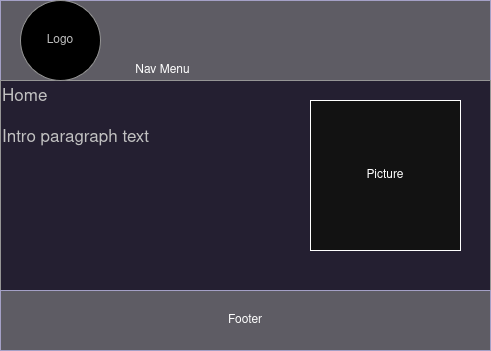
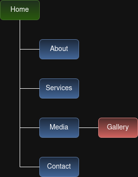

Project Overview
- Project Details
- Description and Purpose: This application will be a website that provides information about and examples of my client's services, a history of the client's company, and the client's contact information for potential customers.
- Intended Users: The website's intended users are individuals and businesses who have an interest in my client's services or who would like to know more about the client's company.
- Site Content Overview: The site will consist of Home, About, Services, Media, and Contact pages. It will give potential clients a place to read about the client, the business, and the services offered; a way to contact the client directly; and a content gallery to view.
- Client Information
- Name: James "Jaycee" Carver
- Business: 3 Jay Media
- E-mail: 3jaymedia@gmail.com
- Wireframe

Mock up of basic structure of client site webpages
- Site Map

Client website site map
- Page Design
- Home: The purpose of this page is to provide a brief introduction to the business to site visitors. The audience will be potential clients. Content will be a picture and a brief introductory paragraph. Users will not be asked to enter data. The page will contain hyperlinks to the About and Services pages. An action that will take place on the page is navigation to another page when a hyperlink is clicked.
- About: The purpose of this page is to provide potential clients with more information about the business and its owner. The audience will be potential clients who need more background information to decide whether they want to do business with this company. Content will be a picture and a few paragraphs. Users will not be asked to enter data. The page will contain a hyperlink to the Services page. An action that will take place on the page is navigation to another page when a hyperlink is clicked.
- Services: This page will provide detail about the services that are offered by the company. The audience will be potential clients who are interested in learning more about the company's service offerings. Content will be a picture and a paragraph or two for each service. Users will not be asked to enter data. The page will contain hyperlinks to the Media and Contact pages. An action that will take place on the page is navigation to another page when a hyperlink is clicked.
- Media: On this page, site visitors will be able to see examples of the company's work. The audience will be potential clients who would like to see examples of the type and quality of work previously completed by the company. Content will be thumbnails with embedded links. Users will not be asked to enter data. The page will contain links to a photo gallery and to the company's Youtube page. An action that will take place on the page is navigation to another page when a hyperlink is clicked.
- Gallery: This page will be a gallery of photos that represent the company's work. The audience will be potential clients who would like to see examples of the type and quality of work previously completed by the company. Content will be a photo gallery.Users will not be asked to enter data. The page will contain buttons that allow the user to interact with the gallery. Actions that will take place on the page are moving forwards or backwards in the gallery and opening a larger version of the photo.
- Contact: The purpose of this page is to provide the visitor with contact information for the company. The audience will be potential clients who have decided that they want to get in contact with the company. Content will be contact information. Users will not be asked to enter data. The page will contain a mailto link for the company's e-mail address. An action that will take place on the page is opening a new message window using the visitor's e-mail application when the mailto link is clicked.
- Dynamic Functionality
On the Gallery page, I plan to use JavaScript to implement a horizontally scrolling photo gallery that overlays a larger version of a picture on the page when it is selected instead of going to another page to display the picture or opening it in a new tab or window.
An example of the overlay functionality can be found here, and an example of the scrolling function can be seen here.